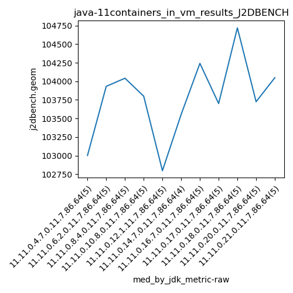
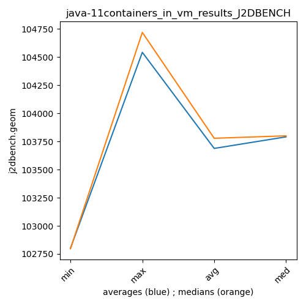

java-11 J2DBENCH
Context at bottom
/home/jvanek/git/benchmarks-in-nested-virtualisation-toolchain/final_results/containers_in_vm_results/containers_in_vm_results_JMH
java-11
J2DBENCH
/home/jvanek/git/benchmarks-in-nested-virtualisation-toolchain/final_results/containers_in_vm_results/containers_in_vm_results_J2DBENCH
java-11
J2DBENCH
containers_in_vm_results_J2DBENCH
final score
Expected number of java-11 JDKs: 11
1st avgmed_alljdks_metric:
/home/jvanek/git/benchmarks-in-nested-virtualisation-toolchain/final_results/result_processing.py /home/jvanek/git/benchmarks-in-nested-virtualisation-toolchain/final_results/containers_in_vm_results/containers_in_vm_results_J2DBENCH j2dbench.geom False
values: [104307, 101472, 103422, 102873, 103002, 103710, 104780, 103932, 103938, 103741, 104041, 103166, 104383, 104549, 103653, 103645, 103800, 104299, 103496, 104764, 102797, 103013, 104792, 101050, 102354, 103555, 104676, 102372, 102372, 104241, 103352, 104635, 103165, 104409, 103774, 103062, 103701, 103661, 103846, 104791, 103543, 105220, 104437, 104719, 104773, 104096, 103725, 102799, 102741, 101520, 104048, 105154, 103865, 104367]

Expected number of iterations: 5
final number of values: 54 out of 55
Pass rate: 98.2%
values: (101050, 105220, 103696.25925925926, 103774)

** accuracy from all jdks and runs
more is better
MIN: 101050
MAX: 105220
AVG: 103696.25925925926
MED: 103774
Relative differences 1:
MIN-MAX: 4.0 %
MIN-AVG: 3.0 %
MIN-MED: 3.0 %
MAX-MIN: -4.0 %
MAX-AVG: -1.0 %
MAX-MED: -1.0 %
AVG-MED: 0.0 %
stored to java-11.properties. sort | uniq that!
2nd avgmed_by_jdk_metric:
values: [103015.2, 104020.2, 103958.4, 104000.8, 102801.2, 103243.75, 103960.4, 103608.8, 104542.0, 103626.8, 103790.8]

values: [103002, 103932, 104041, 103800, 102797, 103555, 104241, 103701, 104719, 103725, 104048]

values: (102801.2, 104542.0, 103688.03181818183, 103790.8)
values: (102797, 104719, 103778.27272727272, 103800)

** accuracy from all jdks where runs were avged
more is better
MIN: 102801.2
MAX: 104542.0
AVG: 103688.03181818183
MED: 103790.8
Relative differences 1:
MIN-MAX: 2.0 %
MIN-AVG: 1.0 %
MIN-MED: 1.0 %
MAX-MIN: -2.0 %
MAX-AVG: -1.0 %
MAX-MED: -1.0 %
AVG-MED: 0.0 %
stored to java-11.properties. sort | uniq that!
** accuracy from all jdks where runs were medianed
more is better
MIN: 102797
MAX: 104719
AVG: 103778.27272727272
MED: 103800
Relative differences 1:
MIN-MAX: 2.0 %
MIN-AVG: 1.0 %
MIN-MED: 1.0 %
MAX-MIN: -2.0 %
MAX-AVG: -1.0 %
MAX-MED: -1.0 %
AVG-MED: 0.0 %
stored to java-11.properties. sort | uniq that!
/home/jvanek/git/benchmarks-in-nested-virtualisation-toolchain/final_results/containers_in_vm_results/containers_in_vm_results_RADARGUNs3
java-11
J2DBENCH
/home/jvanek/git/benchmarks-in-nested-virtualisation-toolchain/final_results/containers_in_vm_results/containers_in_vm_results_SPECJBB
java-11
J2DBENCH
/home/jvanek/git/benchmarks-in-nested-virtualisation-toolchain/final_results/containers_in_vm_results/containers_in_vm_results_RADARGUNs1
java-11
J2DBENCH
/home/jvanek/git/benchmarks-in-nested-virtualisation-toolchain/final_results/containers_in_vm_results/containers_in_vm_results_DACAPO
java-11
J2DBENCH
pass rates:
containers_in_vm_results_J2DBENCH=98.2%
Context:
- containers_in_vm_results
- J2DBENCH